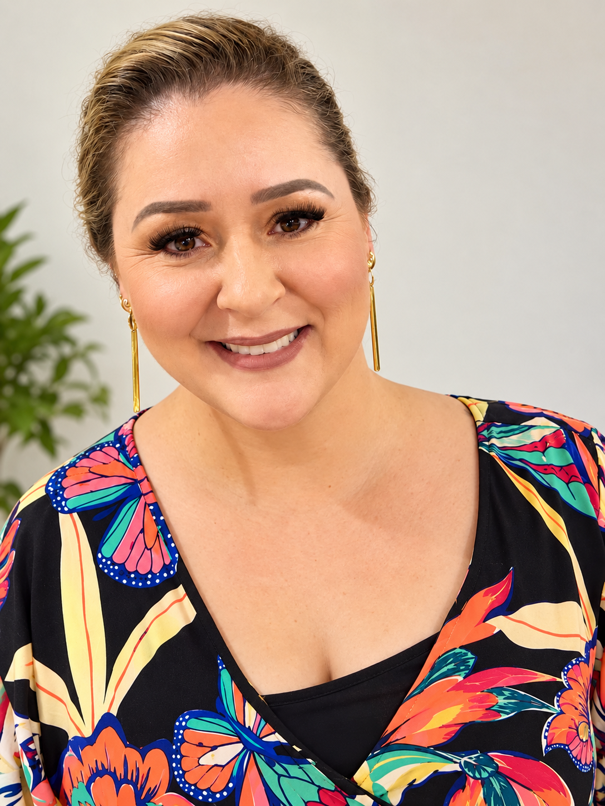

Catanduva · SP Maquiadora profissional
Beleza para momentos que ficam.
Maquiagem para festas e eventos, design de sobrancelhas e micropigmentação com atendimento direto e personalizado.

ALESSANDRA MAKEUP · CATANDUVA

Sobre Alessandra
Maquiagem profissional com cuidado e identidade.
Alessandra Gonçalves Pasqualinoto atua como profissional independente e microempreendedora na área da beleza em Catanduva.
Os atendimentos acontecem em seu espaço dentro de um salão de beleza ou, mediante combinação prévia, em outros locais. O foco principal são produções para casamentos, formaturas, debutantes, aniversários e ocasiões especiais.
Atendimento fixo e freelancer mediante agendamento.
Serviços
Serviços para cada traço e ocasião.
Conheça os serviços oferecidos pela Alessandra MakeUp e fale diretamente com a profissional para informações e disponibilidade.

Maquiagem
para Eventos
Produções para casamentos, formaturas, debutantes, aniversários e outras ocasiões especiais.
Ver portfólio
Design de
Sobrancelhas
Desenho e acabamento para valorizar o formato das sobrancelhas e a expressão do rosto.
Ver portfólio
Micropigmentação
de Sobrancelhas
Procedimento voltado à definição e ao preenchimento visual das sobrancelhas.
Ver portfólioPortfólio
Textura, cor
e expressão.
Uma seleção de trabalhos reais, organizada entre eventos, sobrancelhas e produções especiais.
Ver álbum completo


Trabalhos reunidos para ajudar você a conhecer o estilo da profissional antes do primeiro contato.
Portfólio Alessandra MakeUp
Um primeiro contato simples. Os detalhes vêm depois.
Contato direto
Informações e agendamentos pelo WhatsApp.
O site não utiliza um sistema próprio de agendamento. Para consultar horários, valores e detalhes dos serviços, fale diretamente com a Alessandra.
Atendimento mediante agendamento em Catanduva e região.